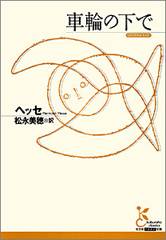

| 光文社古典新訳文庫「古典の森」の読書ナビ 編集長の厳選62冊 | |
| 光文社古典新訳文庫 編集部 | |
もくじ
冒険と恋が待っている！ 森へ歩き始めよう
人生を考えながら、川辺を散策しよう
命、悪の不思議 秘境の森へ
ご注意
《紹介ページへ》のリンクをクリックすると、その書籍のＡｍａｚｏｎ．ｃｏ．ｊｐの商品詳細ページへとびます。
※ｉＰｈｏｎｅ、ｉＰｏｄ Ｔｏｕｃｈ、ｉＰａｄ用のｋｉｎｄｌｅアプリからは、このリンクはご利用いただけません。「この操作は現在対応していません。」というメッセージが表示される旨、ご了承下さい。
ナビゲーターが語る読書のコツ
古典の森には、いくつもの道が開けています。
自分にあった翻訳に出会うための旅。
光文社古典新訳文庫 編集長 駒井 稔
恋愛の森、時の森、生命の森......、古典の森は、ひとつひとつが深い森。ナビゲーターの言葉を聴こう！
踏破できるように、迷わないように、そして、大過渡期を生きている自分に必要な森であることを、知るために。
.........なぜ今、文学や哲学の古典が注目されているのですか？
駒井 今、メディアから流れてくる世界の動きを見ていると、過去に経験したことがない出来事にたくさん出会います。未来から見れば、私たちは大過渡期を生きているのでしょう。
こういう時だからこそ、時代を超えた価値をもつ古典に学んで、指針を得ようと人々が考えだしたからです。
.........それが古典新訳文庫創刊の動機でしょうか？
駒井 はい。混沌とした時代だからこそ古典は必要になると思っていました。しかし既に刊行されている古典作品を読むのは、厳しいと思っていました。ですから今、普通に使われている日本語で訳された「新訳」の古典が生まれるべきだと考えたのです。
まだ翻訳書には、旧来の直訳調に象徴される古い翻訳文体がたくさん残っていました。二一世紀に入って翻訳の質が非常に向上したのに、作品には反映できていなかった。そんな現状を踏まえて、たんに古典を「新訳」するという試みだけでなく、いくつかの「こだわり」（『光文社古典新訳文庫「こだわり」の３点 』参照）をもってつくりあげたのが、この「光文社古典新訳文庫」（二〇〇六年創刊）なのです。
人生の中で何度も出会い何度も読めるのが古典
.........やはり古典というのは手ごわいものが多いです。古典の森を踏破するコツを教えてください。
駒井 たしかに古典の森は相変わらず深い森ですが、今、道はいくつも開けてきています。
日本は明治期から翻訳を熱心にやってきました。そのおかげで、現在では、ひとつの古典の名作にいくつもの翻訳がある状況になっています。だから、書店にいって何冊かの翻訳書を手にとり、初めのところを読み比べて、自分に合うものを探しましょう。自分で自分に合った翻訳を探してみる。それが古典の森を踏破するためのコツになります。私としては選んでいただく本が、古典新訳文庫であることを願ってやみませんが（笑）、自信はありますよ。
.........さて古典の森へと旅に出るのですが、立派な作品ばかりで不安です。
駒井 もっと気楽に考えましょう。今は読み切れないものがあってもそれはそれでいいんです。一番いけないのは、読破できなかったことでその本を嫌いになってしまうこと、あるいは自分には能力がないと思ってしまうことです。
途中でやめても、その本は手元に置いておきましょう。読み返す機会は必ずやって来ます。これからの人生で「読んでください」と本がいってくる日が訪れる。読んでみると、その本は最初に読んだ時とはまったく違う顔を見せるはずです。人生の時々に挑戦してみると、前に気づかなかったことが浮かび上がる、それがまさに古典というものだと思います。
光文社古典新訳文庫「こだわり」の３点
古典新訳文庫では、 何よりも訳文の質を重んじています。翻訳文特有の難解さを極力排し自然な日本語として読まれるよう注意を払ってきました。翻訳家の方々には、美しく正確な日本語で質の高い作品にしていただけるようお願いしています。
従来の古典作品の 文庫カバーは、なぜか文豪たちの晩年の肖像などが多く、古色蒼然たる印象でした。そこで、古典新訳文庫では白を基調とした若々しいイメージにしました。
はじめて作品に触れる 読者に向けて、解説、著者の年譜、訳者あとがきを付けました。特に解説は、その作品が21 世紀の今、なぜ読まれるべきかを懇切丁寧に説明し、理解を助けることができるようにしてあります。
入門編
冒険と恋が待っている！ 森へ歩き始めよう
児童文学から卒業して、さあ何を読もうかというところで、本嫌いになってしまう人が多いと聞きます。本格的な小説を読もうとすれば、確かにある種の飛躍が必要です。でもコツもあるのです。ここでは、小説の読み方ではなく、面白さを発見する方法をご紹介してみました。まずは気軽に手に取って、古典の森に散歩に出かけましょう。最初から深い森の奥に分け入る必要はありません。楽しく軽やかな散歩の仕方を身につけましょう。
青春の森
文学に初めて触れる人にお勧めの作品
車輪の下で
ヘッセ／松永美穂（訳）
《読ナビ》 ドイツの作家、ヘッセのあまりにも有名な作品です。思春期の悩み惑う少年の心を描いた代表的な作品として、世界中の少年少女に愛されてきました。わが国でも、すでにたくさんの翻訳がなされています。
ドイツ文学者・松永美穂さんの手になる本書は、類書にはない繊細でリズム感のある文章で綴られています。主人公のハンスの挫折、苦悩、悲しみを伝えるに十分な「若さ」が横溢する文体は、新しいハンス像を描き出すことに成功しました。時代や国が違っても、日本の読者の心に深く刻印されるものだと思います。文学に初めて触れる人には、特にお勧めの作品です。気負わずに真っすぐ向かい合ってほしいと思います。
《内容》 主人公は、周囲の期待を一身に背負い猛勉強の末、神学校に合格したハンス。しかし厳しい学校生活になじめず、学業からも落ちこぼれてしまう。失意の末、故郷に戻り機械工として新たな人生を始めるが......。地方出身の一人の優等生が、思春期の孤独と苦しみの果てに、破滅へと至る姿を描いたヘッセの自伝的物語。

冒険の滝
怖くて素敵な海賊たち
宝島
スティーヴンスン／村上博基（訳）
《読ナビ》 『宝島』。題名からして想像が広がります。どこにあるのか。どんな島なのか。この有名な作品にはあまたの翻訳がありますが、出来上がってきた原稿を読んだ時の驚きが忘れられません。
訳者の村上博基さんは、海洋冒険小説の翻訳では第一人者です。その村上さんが手加減なく訳したことで、やや子供向けのイメージがあったこの作品は、容赦ない悪党が出てくるきわめてリアルな小説に生まれ変わりました。主人公の少年から見た悪党たちの怖くて、素敵なこと。スティーヴンスンが書いたこの冒険小説を超えるものは、まだ出ていないと断言したくなります。ちょっと難しい言葉も出てきますが、頑張って読んでみませんか。とびっきり面白い小説ですよ。
《内容》 港の宿屋「ベンボウ提督亭」を手助けしていたジム少年は、泊まり客の老水夫から宝の地図を手に入れる。大地主のトリローニ、医者のリヴジーたちとともに、宝の眠る島への航海へ出発するジム。だが、船のコックとして乗り込んだジョン・シルヴァーは、悪名高き海賊だった......。

美しい心の森
あたらしい王子がやってきた！
ちいさな王子
サン＝テグジュペリ／野崎 歓（訳）
《読ナビ》 「ぼくは星の王子さまじゃないよ、ちいさな王子だよ」。そんな声が聞こえてくるような斬新な新訳です。
小さいころに、この作品を与えられて本嫌いになった子供は少なくないのではないでしょうか。フランス文学者の野崎歓さんは、この作品が童話ではないという前提で翻訳を進めました。事実、とても子供の理解できるような内容ではありません。世界中で売れている本の中でも五本の指に入る小説ですが、この新訳でようやくわが国にも真の姿を現したと言っても過言ではありません。砂漠で出会ったキツネとの会話の部分が、特に王子のあたらしい像を提示しています。子供のころ一度挫折した人は、再挑戦してみてください。世界で一番やさしい哲学書です。
《内容》 砂漠に不時着した「ぼく」に、突然話しかけてきた王子。絵を描いてくれとせがむ王子との会話から、二人の関係が始まる。わかりあい、やがてかけがえのない友人になったとき、王子は自分の星に帰ることを「ぼく」に告げる。そしてついに永訣の瞬間がやってきたのだった......。
演劇の森
実際の芝居で吟味された言葉の響き
リア王
シェイクスピア／安西徹雄（訳）
《読ナビ》 名だたるシェイクスピアの作品の中でも際立つ悲劇性で知られる作品といえば『リア王』です。訳者の安西徹雄さんはシェイクスピア学者であり、同時に演劇集団「円」の演出家としても活躍した方です。稽古の時に、何十回も自分の訳したセリフが役者の肉体を通して発声されるのを聞きながら、吟味を重ね練り直された新訳です。たんに戯曲を翻訳したものと比較すると、セリフが格段にリアルなのはそのおかげです。ですから、この新訳ではリア王の苦悩する声が胸の深いところに突き刺さるように響いてくるはずです。
重厚すぎる作品だと敬遠せずに、いきいきとした登場人物たちの言葉を十分に楽しんでください。シェイクスピア悲劇の入門書として最適です。
《内容》 突然引退を宣言したリア王は、誰が王国継承にふさわしいか、娘たちの愛情を試す。しかし結果はすべて王の希望を打ち砕く惨憺たるものだった。最愛の三女コーディリアにまで裏切られたと思い込んだ王は、疑心暗鬼の果てに心を深く病み、荒野をさまよう姿となるが......。
恋愛の森
密かに読んでときめく小説
初恋
トゥルゲーネフ／沼野恭子（訳）
《読ナビ》 『初恋』というタイトルに惹かれて、この本を手に取ったときの胸のときめきをいまも忘れることができません。少年少女には早いと思われがちですが、本当はどきどきしながら読むような年齢で初読すべき小説であると思います。小説は密かに読まれるべきものでもあるからです。
ロシア文学者の沼野恭子さんは、この作品が回想のスタイルをとっていることから「です、ます」調でという方針で新訳に取り組みました。結果として少年のやわらかな心で感受したヒロインのジナイーダの印象が、際立つ新訳になりました。そして父と少年の微妙な関係性も実にリアルに再現されています。とても有名な小説ですが、新訳で読むとまるで現代小説のように読めるのが不思議です。
《内容》 十六歳の少年ウラジーミルは、ある日、隣に引っ越してきた公爵令嬢ジナイーダに一目惚れする。年上の女性への思慕の念は日増しに募り、取り巻きの青年たちと恋のさや当てが始まる。しかし、あるとき彼はジナイーダが恋に落ちたことを知る。その相手を知った時、ウラジーミルは......。
古典新訳文庫リスト【入門編】
（ 編集長のイチオシはココ！）
１ドルの価値／賢者の贈り物 他21 編
Ｏ・ヘンリー／芹澤 恵（訳）
短編小説の名手が描く、ちょっといい話が満載。
秘密の花園
バーネット／土屋京子（訳）
友達を再生させる子供たちの癒しの力に脱帽。
フランケンシュタイン
シェリー／小林章夫（訳）
若き女性作家が書いた最も哀切な〝怪奇小説〟です。
トム・ソーヤーの冒険
トウェイン／土屋京子（訳）
本物のトム・ソーヤーと出会える鮮烈な新訳。
タイムマシン
ウェルズ／池 央耿（訳）
八〇万年後の世界へ時間旅行！ 古典ＳＦを屈指の名訳で。
クリスマス・キャロル
ディケンズ／池 央耿（訳）
あまりにも有名なクリスマス・ストーリー。でも泣けます。
白い牙
ロンドン／深町眞理子（訳）
孤独な灰色狼の目を通して描かれる人間と文明社会。
ハックルベリー・フィンの冒険（上）（下）
トウェイン／土屋京子（訳）
自由を求めて旅する少年と黒人奴隷。勇気が出ます。
そばかすの少年
ポーター／鹿田昌美（訳）
孤児である少年が自然と闘い、逞しく成長する物語！
八十日間世界一周（上）（下）
ヴェルヌ／高野 優（訳）
一九世紀の大世界旅行。タイムリミット・サスペンス！
ジーキル博士とハイド氏
スティーヴンスン／村上博基（訳）
善と悪に分離する人間の二面性を追究した怪奇小説の傑作。
オンディーヌ
ジロドゥ／二木麻里（訳）
水の精・オンディーヌが「いまの言葉」で語り出す。
地底旅行
ヴェルヌ／高野 優（訳）
地球の中心への旅が始まる。臨場感あふれる新訳ＳＦ。
プークが丘の妖精パック
キプリング／金原瑞人・三辺律子（訳）
イギリスの歴史の情景をいきいきと描いたファンタジー。
仔鹿物語（上）（下）
ローリングズ／土屋京子（訳）
仔ジカと少年の交流を描くアメリカ文学不朽の名作。
中級編
人生を考えながら、川辺を散策しよう
あえて正統的な文学を読んでみませんか。大作、名作と言われるものにつまらないものはありません。敬遠しているうちに人生はどんどん過ぎていきます。まだやわらかな感受性で本物にそっと触れてみませんか。ちょっと背伸びした作品が多いと感じるかもしれません。でも勇気をもって、古典の森の奥深くまで渉猟してみましょう。迷っても大丈夫。このシリーズには注や解説、年譜など詳細なナビが付いています。
恋愛の森
夭折した作家が遺した珠玉の作品
肉体の悪魔
ラディゲ／中条省平（訳）
《読ナビ》 主人公の「僕」はなんと十五歳。恋愛の相手であるマルトは十九歳。若い情熱的な恋愛物語を期待すると、あまりに悲しく皮肉な結末に呆然とすることでしょう。
作家・ラディゲは傑作を残して若くして亡くなったことで、三島由紀夫の憧憬の的になりました。
フランス文学者・中条省平さんの明晰かつ繊細な訳文は、ラディゲがいかに優れた作家であったかを教えてくれます。また、解説にくわしく書かれていますが、第一次世界大戦を背景に描かれたことも、この作品を理解する上で大切な鍵になります。それにしてもフランスの少年のなんとかっこいいことか。訳者の流れるような文章に身を任せていると最後に突然、「文学」に出会うことになります。
《内容》 第一次世界大戦下のフランス。パリの学校に通う十五歳の「僕」は、ある日、十九歳の美しい人妻マルトと出会う。二人は年齢の差を超えて愛し合い、マルトの新居でともに過ごすようになる。やがてマルトの妊娠が判明したことから、二人の愛は破滅に向かって進んでいく......。
哲学の森
カント＝難解ではない！
永遠平和のために／啓蒙とは何か 他３編
カント／中山 元（訳）
《読ナビ》 この作品は創刊時の一冊でした。この本が画期的だったのは、「格率」「悟性」などのいわゆる専門的な哲学用語をいっさい使わずに訳された、恐らくは日本で最初のカントの新訳であったからです。
訳者の中山元さんにお願いして、この路線に舵を切れたことは、古典新訳文庫の人文書シリーズの方向を決定づけたと言ってもよいと思います。カント＝難解という図式は、ついに終わりを告げたと言っていいでしょう。もちろんカントがすぐに理解できる、簡単に分かるといった本ではありません。しかし哲学入門に最適な一冊として、若い人々に自信を持ってお勧めできます。
《内容》 「永遠平和のために」では常備軍の廃止、国際連合の設立を唱える。「啓蒙とは何か」では、他人の意見をあたかも自分のもののように思いこむ弊害を指摘している。啓蒙とはカントの定義によれば「自分の知性を使って、判断力のない未成年の状態から抜けでること」。自らの知性を働かせて疑問を抱き、問題を解明し、これまで知らなかったことを知る「勇気を持つ」ことだ。

人生という大河
真に偉大なロシア文学の神髄
アンナ・カレーニナ１（全４巻）
トルストイ／望月哲男（訳）
《読ナビ》 これを不倫の物語というのは少し違うような気がします。なぜならアンナが本当に愛した最初の男性が夫ではなく、ヴロンスキーだからです。一九世紀の恋愛は、私たちの生きる二一世紀のそれとはなんと違うことでしょう。新訳ではアンナの懊悩、恋人ヴロンスキーの葛藤、アンナの夫であるカレーニンの苦悩と誠実さが見事に訳出されています。
望月哲男さんの端正な文体は、悲劇に向かって進んでいくこのドラマを冷静かつ緻密に再現します。そしてキティとリョーヴィンというもうひと組のカップルが、実はこの小説の構成上大変重要な存在であることに初めて気づかせてくれるのです。初めて読む人も再読の人も、この翻訳で偉大なロシア文学の真髄に触れることができるでしょう。
《内容》 青年将校ヴロンスキーと激しい恋に落ちた美貌の人妻アンナ。だが、夫カレーニンに二人の関係を正直に打ち明けてしまう。一方、地主貴族リョーヴィンのプロポーズを断った公爵令嬢キティは、ヴロンスキーに裏切られたことを知り、傷心のまま保養先のドイツに向かうのだった。
和の森
日本の古典の面白さを知るために
虫めづる姫君 堤中納言物語
作者未詳／蜂飼耳（訳）
《読ナビ》 堤中納言とは誰なのか。そんな疑問を抱いてこの物語を読み始めると、いささか面喰らうのではないでしょうか。十の短編とひとつの断章からなるこの作品は、現代小説を読み慣れた読者には、最初は少し違和感があるかもしれません。
詩人にして小説家である蜂飼耳さんの手になるこの画期的な新訳は、日本古典文学の翻訳史に金字塔を打ち立てたといえます。蜂飼さんの古典の深い教養に裏打ちされた精確な現代日本語訳からは、これまでの現代語訳とはまったく違う物語世界が垣間見えてくるからです。日本の古典の面白さを知るための格好の入門書と言えるでしょう。そして日本の古典文学は世界文学でもあるのです。
《内容》 風流な貴公子の失敗談「花を手折る人（花桜折る中将）」。年ごろなのに夢中になるのは虫ばかりの姫「あたしは虫が好き（虫めづる姫君）」。一人の男をめぐる二人の女の明暗をあぶり出す「黒い眉墨（はいずみ）」。貝の珍しさや美しさを競う貝あわせという遊びをする少女とそれを応援する貴公子の物語「貝あわせ（貝あはせ）」。
文学の巨樹
奇妙奇天烈な人物像 その格別な魅力
罪と罰１（全３巻）
ドストエフスキー／亀山郁夫（訳）
《読ナビ》 ソーニャとラスコーリニコフの恋愛が、若い人にはとても魅力的なはずです。
しかしあまり言われないことかもしれませんが、この物語に登場する奇妙奇天烈な人物像も特別に魅力的だと思います。なかでもスヴィドリガイロフという人間は、あまりに変わっていて、他の小説では絶対に登場しないキャラでしょう。亀山郁夫さんの訳文はスピード感にあふれ、会話の部分のリアリティが他の追随を許しません。ためしに冒頭部分を既訳と読み比べてみてください。実に周到に考え抜かれた文章であることが分かると思います。読みやすさだけを追求したのではなく、現代の読者を知り尽くした訳者ならではの新訳だといえるでしょう。
《内容》 貧困・孤独・狂気の渦巻く大都会のかたすみに、「理想的な」殺人をたくらむ青年が住んでいた。酔いどれ役人との出会い、母からの重い手紙......。ある日、目の前にとつぜん現れた愛する母と妹。ラスコーリニコフは彼女たちの話を聞いて、奈落の底に突きおとされる。そして予審判事ポルフィーリーのもとに出向くことになったのだが......。

古典新訳文庫リスト【中級編】
（ 編集長のイチオシはココ！）
老人と海
ヘミングウェイ／小川高義（訳）
老人と巨大カジキの闘い。ヘミングウェイの最高傑作。
夜間飛行
サン＝テグジュペリ／二木麻里（訳）
作家の実体験が生んだ詩情あふれる航空小説。
月と六ペンス
モーム／土屋政雄（訳）
画家ゴーギャンをモデルにした情熱的な芸術家物語。
ドリアン・グレイの肖像
ワイルド／仁木めぐみ（訳）
美しい肉体と醜く変貌していく魂の相克を描く。
地下室の手記
ドストエフスキー／安岡治子（訳）
現代にも通じるロシア版・元祖ひきこもりの心理。
嵐が丘（上）（下）
Ｅ・ブロンテ／小野寺 健（訳）
一度は読んでみたい狂気のような激しい恋物語。
猫とともに去りぬ
ロダーリ／関口英子（訳）
猫の半分が元・人間？ イタリア・ファンタジーを楽しむ。
マクベス
シェイクスピア／安西徹雄（訳）
そそのかされ、王を殺した男の運命は。戯曲は面白い。
ジェイン・エア（上）（下）
Ｃ・ブロンテ／小尾芙佐（訳）
古典ロマンス小説の金字塔。ヒロインが最高です。
変身／掟の前で 他２編
カフカ／丘沢静也（訳）
カフカの本当の「味」が分かる新訳短編集。
故郷／阿Ｑ正伝
魯迅／藤井省三（訳）
中国の近代化のなかで苦しむ人間たちの真実を描く。
森の旅の休憩時間
古典新訳文庫づくり こぼれ話
「古典」という言葉のイメージチェンジ
「古典という言葉が嫌いだ」。本の話をしているとそんな発言をよく耳にします。本を読むことは大好きだけれど、古典という言葉を聞くと、学生時代の退屈な文法の授業を思い出してしまうのだと。しかし古典という言葉のイメージを、プラスに転化することだってできるはずだ、読みやすくて面白い作品を刊行していけば必ず印象は変わるはずだと思っていました。そしてこの10 年でそれにはまずまず成功したのではないかと思います。古典は「昔の物」ではなく、いつの世にも読まれるべき価値の高い本のことであると声を大にして言いたいのです。繰り返し新訳ができるということは永遠の命が宿っているからなのです。
自由に気軽に翻訳で、世界に触れる
翻訳って横の物を縦にしただけでしょう？ こんな質問を受けることもままあります。こういう意見をいう人は、翻訳はオリジナルではなく、一段下のものだという考えがあるのでしょう。でもよく考えると、翻訳で本を読むことをやめると、世界の文学、思想のごくわずかしか分からないことになります。日本人の著者のものだけで、今の世界を知ることは不可能ではないでしょうか。まして古典となると翻訳で読むことを受け入れないと狭い範囲しか知ることができません。だからといって、世界を読みつくそうなどと大上段に構えることはありません。自由に気軽に世界の古典に触れることができる時代が来たのですから。
なんとかスキー!? 人名という難関
「人名」という難関が外国文学にはあります。名前が覚えられないから外国文学は読まないという人すらいます。分かります。分かりますが、ちょっと待ってください。古典新訳文庫では、人名の森で迷わないようにドラスティックなことも試みています。たとえばロシア語の人名には、父称というミドルネームがあって、読者を苦しめてきました。イワン・なんとかビッチ・なんとかスキーなんて名前、普通の読者には覚えられませんよね。これでいやになる人がとても多い。ですから真ん中の名前を省略することにしたのです。これだけでずいぶんすっきりしたと思います。もちろんロシア文学の泰斗に相談したうえでのことでしたが。
何度も読むことは、大切な人生経験
初めて『アンナ・カレーニナ』を読んだのは、大学生の時でした。アンナは、はるか年上の成熟した女性でした。２度目に読んだのは30 代の前半。アンナは同世代になりました。彼女の苦しみがよく分かるような気がしました。そしてそれから十数年経って、仕事で原稿を読む機会に恵まれました。それまで気づかなかったアンナの夫、カレーニンの哀しみと善良さが心に残りました。同じ本を何度も読むことは大切な人生経験の一つだと思います。自分が年齢を重ねると作品が違う顔を見せてくれるのが、本物の古典です。分からないことがあっても、いつか分かるという楽しみが残っているのだと思うと、ぐっと気が楽になりませんか。
上級編
命、悪の不思議 秘境の森へ
今まで読んだことのない大作があなたに読まれるのを待っています。古典の旅は生涯続くものですが、挫折するのもいい体験です。何も読まないよりも読んで絶望する方がいい。あきらめずに何度でもチャレンジすればいいのです。古典作品は１回ですべてが分かるようにはできていません。人生を通じて読んでいくものですから、最初に理解できるのがほんのわずかでも気にしない、気にしない。このガイドを参考に遠くまで行ってみましょう。
文学の巨樹
生涯で一度は読んでみたい小説
カラマーゾフの兄弟１（全４巻＋エピローグ別巻）
ドストエフスキー／亀山郁夫（訳）
《読ナビ》 世界最高峰の小説。そして生涯で一度は読んでみたい小説です。しかし難解さをもって鳴る小説でもあります。特に宗教について書かれた部分は、日本人にはなかなか理解が及びません。
意外なようですが、亀山郁夫訳で読む『カラマーゾフの兄弟』が支持された背景のひとつに、女性たちが実に生き生きと描かれていることがあると思います。ドミートリーとシベリアに赴くグルーシェニカ、イワンの恋人であるカテリーナ。この二人の女性が、この物語の中で果たす役割は小さくないと思います。それどころか、二人が小説の中で放つオーラは、凄絶ですらあります。情熱的で不可解な女性像を見事に再現した新訳を存分にお楽しみください。
《内容》 父親フョードル・カラマーゾフは、圧倒的に粗野で精力的、好色きわまりない男だ。その息子たちミーチャ、イワン、アリョーシャの三人兄弟が家に戻り、その父親とともに妖艶な美人をめぐって繰り広げる葛藤。アリョーシャは、慈愛あふれるゾシマ長老に救いを求めるが......。
時の森
永遠に読まれ続ける新訳
失われた時を求めて１ 第一篇「スワン家のほうへＩ」
プルースト／高遠弘美（訳）
《読ナビ》 プルーストといえば、「マドレーヌ」ではないでしょうか。紅茶にひたしたプチット・マドレーヌを食べた「私」が、その味覚によって過去の記憶を喚起されるという文学史上における有名な一節です。しかし、フランス文学者の高遠弘美さんの新訳を読むまでは、なぜこの一節がこれほど広く知られることになったのか、いまひとつ理解できませんでした。しかし校正ゲラを読み進めていく過程で、この部分を読んだ時、きわめて重要な記述であることが納得できました。感動的な体験でした。たんなるエピソードとしてではなく、感覚的な真実として読むことができたのは、この時が初めてだったからです。この新訳は永遠に読まれ続けていくのではないかと思っています。
《内容》 「長い間、私はまだ早い時間から床に就いた。」小説はこの有名な書き出しから始まる。色彩感あふれる自然描写、深みと立体感に満ちた人物造型、連鎖する譬喩......深い思索と感覚的表現のみごとさで二〇世紀最高の文学と評される。第一巻では、語り手の幼少時代が夢幻的な記憶とともに語られる。
生命の森
本書の読後、世界観が変わる！
種の起源（上）（下）
ダーウィン／渡辺政隆（訳）
《読ナビ》 一九世紀は偉大な書物がいくつも誕生した世紀でした。『資本論』が東の横綱であれば、西の横綱はこの本でしょう。誰もが名前を知っているけれど、読了した人は寡聞にして知らない。そんな本を何とかして新訳として出したいと考えました。
訳者の渡辺政隆さんとは、すでに生物学の本の翻訳で何冊か仕事をしたことがありました。難解な事柄を平明に翻訳することのできる才能の持ち主であることは承知していましたが、この本の新訳を引き受けていただいた時のうれしさは今も覚えています。骨の折れる本であることは間違いありません。しかしダーウィンの筆の運びにゆっくりとついていくと読後に驚くべき世界観を獲得できます。
《内容》 生物学の根幹にある進化論が語られる。「なぜかくも多様な生物がいるのか」。ダーウィンはひとつの結論にたどり着いた。すべての生物は共通の祖先を持ち、少しずつ変化しながら枝分かれをしてきたのだ。つまり、「じつに単純なものからきわめて美しく、きわめてすばらしい生物種が際限なく発展しなおも発展しつつある」のだと考えた。


悪の森
植民地支配を描ききった作品
闇の奥
コンラッド／黒原敏行（訳）
《読ナビ》 コッポラが映画『地獄の黙示録』の下敷きにした作品。『崩れゆく絆』を書いたアフリカ人作家・アチェベが、激烈な批判の対象としたことでも有名な作品です。伝説のみが独り歩きする作品がありますが、これがその筆頭格だと言えるかもしれません。
既訳で読もうとして挫折した話を何度聞いたか分かりません。自分自身もそうでした。ですから翻訳家・黒原敏行さんの原稿が上がるのを一日千秋の思いで待ち続けました。
そして読み始めた時の感激といったら。分かる。分かる。そうかこういう作品だったのか。コンゴ河を遡る船に自分が同乗しているかのような錯覚に陥りました。西欧の植民地支配を、ここまで見事に描ききった作品はありません。
《内容》 船乗りマーロウはかつて、象牙交易で絶大な権力を握る人物クルツを救出するため、アフリカの奥地へ河を遡る旅に出た。募るクルツへの興味、森に潜む黒人たちとの遭遇、底知れぬ力を秘め沈黙する密林。ついに対面したクルツの最期の言葉と、そこでマーロウが発見した真実とは？
人生という大河
大団円へと向かう物語の牽引力
赤と黒（上）（下）
スタンダール／野崎 歓（訳）
《読ナビ》 ジュリヤン・ソレルという名前は、ある時期までわが国でも野心的な青年の代名詞でした。しかし小説を読んだ人はそれほど多くなかったような気がします。有名な主人公が活躍する小説が、かえって読まれることが少ないのは、すでに分かったような気がしているからだという単純な理由によることが多いものです。野崎歓さんの新訳に登場するジュリヤンは、ただ上昇志向の強い青年ではありません。恋人のレナール夫人との関係においても驚くほどナイーブです。このようなニュアンスを見事に伝えながら、スピード感をいささかも損なうことなく物語の大団円に向かって一瀉千里に読者を引っ張っていくのが、この新訳の力業です。
《内容》 ナポレオン失脚後のフランス。貧しい家に育った青年ジュリヤン・ソレルは、立身のため僧職に身を投じる。やがて貴族であるレナール家の家庭教師となり、その美貌からレナール夫人に慕われるようになる。ジュリヤンは金持ちへの反発と野心から、夫人を誘惑する。神学校を足がかりに、ジュリヤンの野心はさらに燃え上がるのだった。
古典新訳文庫リスト【上級編】
（ 編集長のイチオシはココ！）
すばらしい新世界
オルダス・ハクスリー／黒原敏行（訳）
近未来小説の傑作。あまりにも現代的な古典ＳＦ。
菊と刀
ベネディクト／角田安正（訳）
アメリカの文化人類学者が書いた画期的な日本人論。
自由論
ミル／斉藤悦則（訳）
自由の意味を真に考えるための最良の教科書。
善悪の彼岸
ニーチェ／中山 元（訳）
西洋文明と闘った哲学者の言葉から世界を見よう。
ねじの回転
ジェイムズ／土屋政雄（訳）
文学史上もっとも恐ろしい小説と言われています......。
チャタレー夫人の恋人
Ｄ・Ｈ・ロレンス／木村政則（訳）
階級を超える「恋と生の解放」を謳った思想小説。
グレート・ギャッツビー
フィッツジェラルド／小川高義（訳）
挫折した男の心情を繊細に描いたアメリカ文学の傑作。
高慢と偏見（上）（下）
オースティン／小尾芙佐（訳）
一九世紀英国を代表する長編小説を名訳で読む。
ソクラテスの弁明
プラトン／納富信留（訳）
罪に問われたソクラテスの肉声が聞こえてくる新訳。
狭き門
ジッド／中条省平・中条志穂（訳）
世界文学史上屈指の美しく悲痛なラヴ・ストーリー。
市民政府論
ロック／角田安正（訳）
この一冊が「近代市民社会」を成立させたのです。
砂男／クレスペル顧問官
ホフマン／大島かおり（訳）
サイコ・ホラーの原点といわれている悪夢のような物語。
幼年期の終わり
クラーク／池田真紀子（訳）
三島由紀夫が絶賛した哲学的ＳＦ小説の金字塔。
世界文学というもうひとつの森
大好評の東京大学教授の沼野充義先生の対談シリーズ！
文学の第一線で活躍する作家、翻訳家、研究者たちをゲストに招いて世界文学について縦横に語り合います。
連続講座を再構成した、今最もスリリングな文学論集。
世界は文学でできている〜対話で学ぶ〈世界文学〉連続講義〜
沼野充義（編著）
《ゲスト》 リービ英雄、ロバート キャンベル、平野啓一郎、飯野友幸、亀山郁夫
やっぱり世界は文学でできている〜対話で学ぶ〈世界文学〉連続講義２〜
沼野充義（編著）
《ゲスト》 亀山郁夫、野崎 歓、都甲幸治、綿矢りさ、楊 逸、多和田葉子
それでも世界は文学でできている〜対話で学ぶ〈世界文学〉連続講義３〜
沼野充義（編著）
《ゲスト》 加賀乙彦、谷川俊太郎、田 原、辻原 登、ロジャー・パルバース、アーサー・ビナード
●光文社古典新訳文庫 公式サイト
光文社古典新訳文庫「古典の森」の読書ナビ 編集長の厳選62 冊
光文社古典新訳文庫 編集部編
発行日 ２０１６年４月１日
発 行 株式会社光文社
〒１１２−８０１１
東京都文京区音羽１−16 −６
© Kobunsha Co., Ltd. 2016